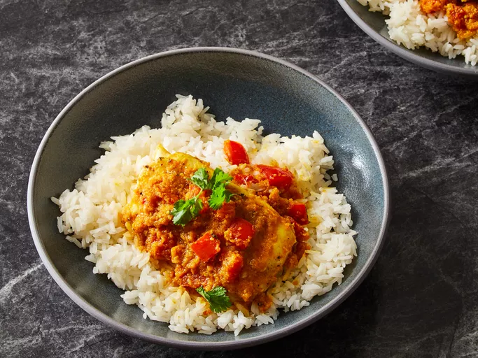

Indian Fish Curry

Description
This Indian fish curry is a very spicy dish. The recipe was inspired by a Bengali fish recipe my mother used to make in India.
Ingredients
- 3 tablespoons canola oil, divided
- 2 teaspoons Dijon mustard
- 1 teaspoon ground black pepper
- 1 ½ teaspoons salt, divided
- 4 white fish fillets
- 1 medium onion, coarsely chopped
- 4 cloves garlic, roughly chopped
- 1 (1 inch) piece fresh ginger root, peeled and chopped
- 5 cashew halves
- 2 teaspoons cayenne pepper, or to taste
- 1 teaspoon ground cumin
- 1 teaspoon ground coriander
- 1 teaspoon white sugar
- ½ teaspoon ground turmeric
- ½ cup chopped tomato
- ¼ cup vegetable broth
- ¼ cup chopped fresh cilantro
Steps
- Gather the ingredients.
- Mix 2 tablespoons oil, mustard, black pepper, and 1/2 teaspoon salt together in a shallow glass bowl.
- Add fish and turn to coat. Cover and refrigerate for 30 minutes.
Home